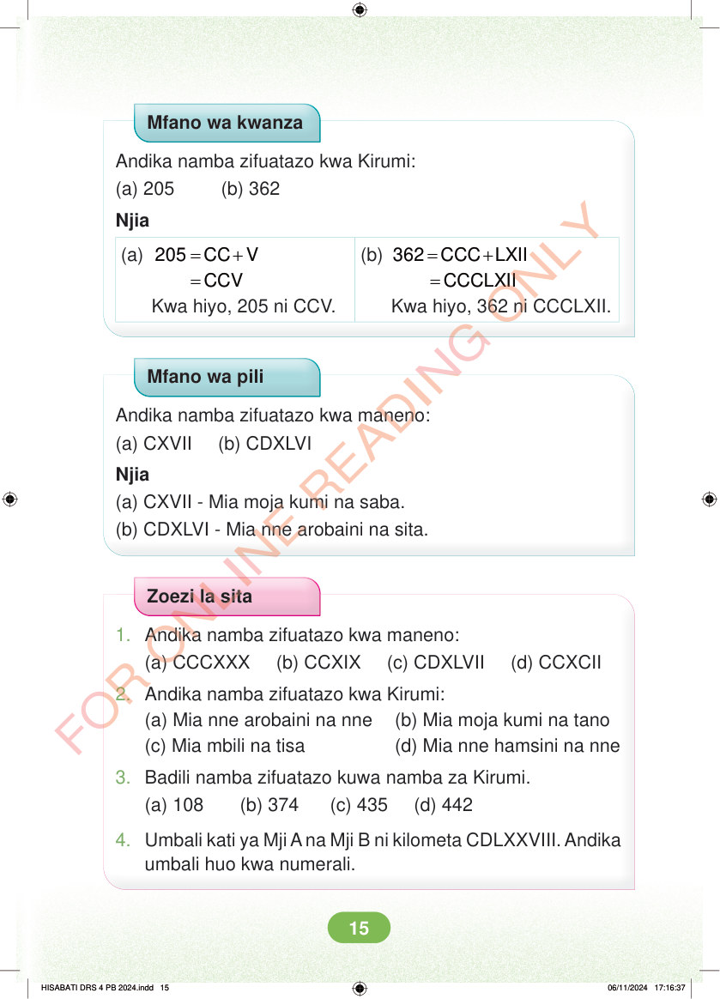

Mfano wa kwanza. Andika namba zifuatazo kwa Kirumi. Kipengele a, 205. Kipengele b, 362. Njia. Kipengele a. 205 = CC + V. = CCV. Kwa hiyo, 205 ni CCV. Kipengele b. 362 = CCC + LXII. = CCCLXII. Kwa hiyo, 362 ni CCCLXII. Mfano wa pili. Andika namba zifuatazo kwa maneno. Kipengele a, CXVII. Kipengele b, CDXLVI. Njia. Kipengele a. CXVII, mia moja kumi na saba. Kipengele b. CDXLVI, mia nne arobaini na sita. Zoezi la sita. Swali namba moja. Andika namba zifuatazo kwa maneno. Kipengele a, CCCXXX. Kipengele b, CCXIX. Kipengele c, CDXLVII. Kipengele d, CCXCII. Swali namba mbili. Andika namba zifuatazo kwa Kirumi. Kipengele a, mia nne arobaini na nne. Kipengele b, mia moja kumi na tano. Kipengele c, mia mbili na tisa. Kipengele d, mia nne hamsini na nne. Swali namba tatu. Badili namba zifuatazo kuwa namba za Kirumi. Kipengele a, 108. Kipengele b, 374. Kipengele c, 435. Kipengele d, 442. Swali namba nne. Umbali kati ya Mji A na Mji B ni kilometa CDLXXVIII. Andika umbali huo kwa numerali.